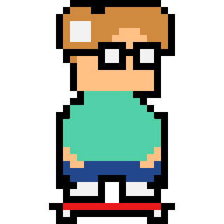

Tyler Amalfa

Self-Balancing Skateboard Robot
Key Components:
Arduino, Gyroscope, Woodworking, and Circuitry
This project was designed as a modified skateboard, which was capable of balancing on its rear two wheels. It utilized Arduino programming to control the shifting of weight, and a gyroscope in order to read the angle of the skateboard, relative to the ground. This project was a joint effort between a partner and I for our Honors Engineering Design class in high school.
Wordle Bot
Key Components:
Java and Selenium Web Automation
This project utilized Java to implement an algorithim, that I desgined, capable of solving the popular Wordle puzzle. The algorithim was designed to suggest words based on a multitude of factors in order to attempt to solve the puzzle in as few guesses as possible. It implemented the same word library that Wordle was based upon. The final version was coupled with Selenium Web Automation in order to gather performance data from the Wordle Archive.
Sudoku Solver
Key Components:
Java, OpenCV, and Tesseract
This project was capable of taking an input of an image of a sudoku puzzle, and outputting a solved version. It implemented an algorithim of my own design for solving sudoku puzzles, based upon popular sudoku solving techniques. I utilized Java to write the program, and OpenCV and Tesseract to take in the input of the puzzle. It was capable of solving most puzzles, of varying sizes, with a high accuracy. This project was a joint effort between a partner and I for our AP Computer Science A class in high school.
Library System
Key Components:
Java, HTML, and CSS
This project was intended to function to keep track of the inventory of movies, books, and music in my house. It contained functionality for a user to have their own login, check in and check out items, and modify personal data. It also contained additional administrator permissions to add, modify, and delete items, locations, and people. The first version of this was written using Java and object oriented programming for a command line implementation of the functionality. The current version is still being worked on as a website built from HTML, JSP, and CSS.
Modified Laser Tag
Key Components:
Circuitry
This project involved the modification of a standard laser tag set to add additional stakes for older players, by adding a Transcutaneous Electrical Nerve Stimulation(TENS) unit to each laser tag chest piece. The TENS unit was soldered into the chest piece using a relay to control the input between the TENS device and the electric pads on the user's body. This project was a joint effor between a group of my friends and I for a hackathon, and we won a "Hack of Distinction" prize for it.
Various Web Automation Projects
Key Components:
Java, Selenium Web Automation, and HTML
I've worked on various projects which deal with automating various tasks on popular websites. This familiarized me with HTML and its implementation on sites for companies like Disney World, Supreme, Nike, and Google Maps. These were all designed to ease my life, and make repetitive tasks simpler.